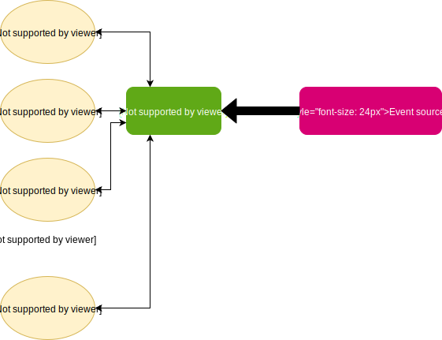

class: center, middle <img src="https://monix.io/public/images/monix-logo.png" width="100" /> # Monix in practice ### Ilya Murzinov [https://twitter.com/ilyamurzinov](https://twitter.com/ilyamurzinov) [https://github.com/ilya-murzinov](https://github.com/ilya-murzinov) Slides: [https://ilya-murzinov.github.io/slides/scalaspb2018](https://ilya-murzinov.github.io/slides/scalaspb2018) --- layout: true <div class="my-footer"><span>Monix in practice - Ilya Murzinov, slides: <a href="https://ilya-murzinov.github.io/slides/scalaspb2018">https://ilya-murzinov.github.io/slides/scalaspb2018</a></span></div> --- class: middle, center --- # Agenda ### → Motivation - ### Discovering Monix API - ### Small example - ### Downsides --- # Motivation --- class: middle, center # Composability --- # Motivation - ### Composability -- - ### Local reasoning -- - ### Readability -- - ### Efficiency / performance --- class: middle, center # <span style="color:red">Side-effects</span> --- ```scala class Counter { private[this] var count: Int = 0 def inc(): Int = { val res = count count = count + 1 res } } val counter = new Counter() ``` -- ```scala val count = `counter.inc()` + `counter.inc()` ``` -- ```scala val i = `counter.inc()` val count = i + i ``` --- # Agenda - ### Motivation ### → Discovering Monix API - ### Small example - ### Downsides --- # What is Monix -- - ### Set of libraries for functional and reactive programming with effects -- - ### Typelevel project --- # Core components -- - #### `Task` -- - #### `Scheduler` -- - #### `Observable` -- - #### `Coeval`, `Iterant`, `MVar`, `AsyncQueue`, `TaskCircutBreaker`, `TaskLocal`... --- class: middle, center # `Task[A]` ??? Task is a data type for describing computations Task is a lazy Future --- # Creating a task ```scala import monix.eval.Task // equivalent to Task.pure(...) Task.now(42) Task.eval(println(42)) // equivalent to Task.eval(...).executeAsync Task(println(42)) // equivalent to Task.eval(...).memoizeOnSuccess Task.evalOnce(println(42)) Task.defer(createSomeTask()) ``` --- # Composing tasks ```scala import scala.io.StdIn val readLine: Task[String] = Task.eval(StdIn.readLine()) def print(s: String): Task[Unit] = Task.eval(println(s)) val task = for { l <- readLine _ <- print(s"Hello $l") } yield () ``` -- ```scala val tasks = Seq(task1, task2, ...) Task.sequence(tasks) Task.gather(tasks) Task.gatherUnordered(tasks) Task.race(task1, task2) ``` --- # Composing tasks ```scala val openFile = Task.eval(Source.fromFile("/home/monix/file.txt")) // acquire.bracket(use)(release) val task: Task[Iterator[String]] = openFile.bracket { f => Task.eval(f.iter) } { f => Task.eval(f.close()) } ``` --- class: middle, center # `Scheduler` ??? Scheduler extends ExecutionContext and adds more capabilities --- # Running a task --- # Agenda - ### Motivation - ### Discovering Monix API ### → Small example - ### Downsides --- # Example  --- # Example ```scala def clientSubscriber(clients: MVar[Clients]) = Observable.repeat(()) .doOnSubscribe(() => println(s"Client subscriber started")) .mapTask(_ => acceptClient) .mapTask { case (id, s) => for { map <- clients.take _ <- clients.put(map + (id -> s)) } yield () } .completedL ``` --- # Example ```scala def eventSourceProcessor(clients: MVar[Clients]) = Observable.repeat(()) .doOnSubscribe(() => println(s"Event processor started")) .mapTask(_ => acceptEventSource) .flatMap(it => Observable.fromIterator(it) .map(parse) .scanTask(Task.pure(initialState)) { case (state, event) => for { map <- clients.take state <- handler.handle(event, state, map) _ <- clients.put(map) } yield state }) .completedL ``` --- # Example ```scala for { clients <- MVar(Map[ClientId, Socket]()) c = clientSubscriber(clients).executeOn(clientScheduler) e = eventSourceProcessor(clients).executeOn(eventSourceScheduler) _ <- Task.gatherUnordered(Seq(c, e)) } yield () ``` --- # Agenda - ### Motivation - ### Discovering Monix API - ### Small example ### → Downsides --- # Downsides -- - ### `Task` is too powerful --- # References - [Monix](https://monix.io) - [Monix vs Cats-Effect](https://monix.io/blog/2018/03/20/monix-vs-cats-effect.html) - [Scalaz 8 IO vs Akka (typed) actors vs Monix @ SoftwareMill](https://blog.softwaremill.com/scalaz-8-io-vs-akka-typed-actors-vs-monix-part-1-5672657169e1) --- class: center, middle # Questions? --- class: center, middle # Thanks!